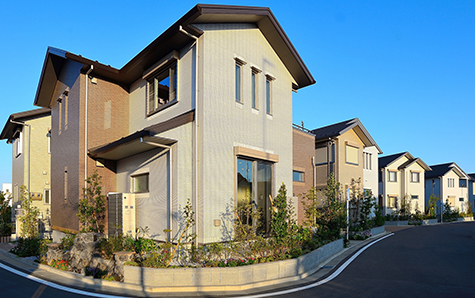
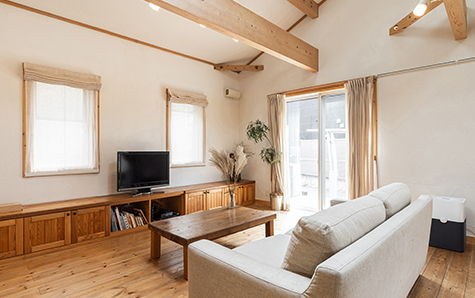
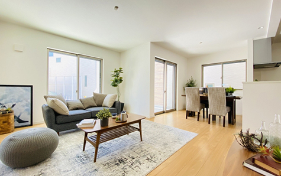

SELL HIGH / 高く売りたい
不動産を高く売りたい方へ
相模原市・厚木市で、市場価格に近い売却を目指す方向けに。
仲介売却の進め方とポイントをわかりやすくご案内します。
- ホーム
- 高く売りたい
高く売りたい
相模原市・厚木市で不動産を少しでも高く売りたい方には、幅広く買主を探せる仲介売却が適しています。アイモットでは、代表の楠本が物件の特徴や周辺相場、売却時期、売主様のご事情を丁寧に整理し、価格だけに偏らない販売計画をご提案します。
大切な不動産を納得できる条件で売却するために、押さえておきたいポイントをご案内します。
不動産を高く売りたい方には仲介がおすすめです
不動産を高く売りたい場合は、不動産会社が購入希望者を探す「仲介」が基本的な選択肢となります。仲介では、物件情報サイトや既存の顧客などを通じて幅広く買主を募り、条件の合う購入希望者を探します。売却までに一定の時間が必要になることはありますが、市場価格に近い、またはそれ以上の価格で売却できる可能性を高めやすい方法です。
仲介は幅広い購入希望者へ紹介できます
仲介では、一般の個人や法人、投資家など、さまざまな購入希望者へ物件を紹介できます。立地、広さ、間取り、日当たり、周辺環境など、物件の価値を感じるポイントは買主によって異なります。
複数の購入希望者へ情報を届けることで、その物件を高く評価してくれる相手と出会える可能性が広がります。物件ごとに適した見せ方を考えることも重要です。
売却価格と売却期間のバランスが重要です
高値での売却を目指す場合でも、相場とかけ離れた価格で売り出すと、問い合わせや内覧が少なくなる可能性があります。売れない期間が長くなると、最終的に大幅な値下げが必要になることもあります。
希望価格だけで判断せず、周辺の成約事例や現在の競合物件、売却期限を踏まえ、価格と期間のバランスが取れた販売計画を立てることが大切です。
仲介と買取の違いを知り、売却方法を選びましょう
仲介と買取では、買主や販売期間、売却価格の考え方が異なります。高く売りたい方には仲介が適していますが、短期間での売却を優先する場合は買取が向いていることもあります。
どちらか一方だけで判断するのではなく、希望する価格、売却期限、物件の状態、周囲に知られずに進めたいかなどを整理し、ご自身に合う方法を選びましょう。
※表は左右にスクロールして確認することができます。
| 比較項目 | 仲介 | 買取 |
|---|---|---|
| 買主 | 個人・法人・投資家など | 不動産会社 |
| 売却価格 | 市場価格に近い価格を目指しやすい | 仲介より低くなる傾向 |
| 売却期間 | 買主が見つかるまで時間が必要 | 比較的短期間 |
| 販売活動 | 広告や内覧を実施する | 原則として不要 |
| 仲介手数料 | 原則として必要 | 原則として不要 |
| 向いている方 | 価格を重視したい方 | 早さを重視したい方 |
高く売るために最初に整理したい条件
高く売るためには、査定を依頼する前に、売却の目的や譲れない条件を整理しておくことが大切です。希望価格だけでなく、いつまでに売りたいか、引き渡し時期を調整できるか、住宅ローンが残っているかなども確認しましょう。
条件に優先順位を付けておくことで、購入申込みが入った際にも冷静に判断しやすくなります。
売却理由と希望時期を
整理する
相続した不動産の整理、住み替え、離婚、資産整理など、売却理由によって適した進め方は変わります。時間に余裕があれば、高値での成約を目指してじっくり販売できます。
一方で、売却期限が決まっている場合は、時期に合わせた価格設定や見直しの基準が必要です。なぜ売るのか、いつまでに売りたいのかを明確にし、販売計画へ反映させましょう。
価格以外の希望条件も
確認する
不動産売却では、売却価格だけでなく、引き渡し時期、室内に残した設備や荷物の扱い、契約条件なども重要です。価格が少し低い申込みでも、希望する時期に引き渡せる、残置物をそのまま引き継いでもらえるなど、売主にとって有利な条件が含まれる場合があります。
最終的な手取り額や負担まで比較し、総合的に判断することが大切です。
適正な査定価格を知ることが高値売却の第一歩です
不動産を高く売るためには、まず物件の適正な価値を把握する必要があります。査定価格が高ければ高く売れるとは限りません。
査定の根拠が不明確なまま高値で売り出すと、購入希望者から選ばれにくくなることがあります。周辺の成約事例や競合物件、物件の状態を確認し、現実的に成約を目指せる価格を把握しましょう。
査定価格の高さだけで不動産会社を選ばない
複数の不動産会社へ査定を依頼すると、提示される価格に差が出ることがあります。その際は、最も高い査定額を提示した会社を選ぶのではなく、価格の根拠を確認しましょう。どの成約事例を参考にしたのか、物件の長所と短所をどのように評価したのか、想定する販売期間はどの程度なのかまで説明を受けることが重要です。
成約事例と売出中の物件を確認する
査定では、実際に売れた物件の成約事例と、現在売り出されている競合物件の両方を確認します。売出価格は売主の希望が含まれているため、その価格で成約するとは限りません。成約事例を基準にしながら、同じ地域や似た条件の競合物件と比較することで、購入希望者から選ばれやすい価格帯を判断しやすくなります。
売出価格は販売戦略を踏まえて決めましょう

売出価格は、売主の希望だけでなく、査定価格や市場の動き、売却期限を踏まえて決定します。最初から必要以上に価格を下げる必要はありませんが、高く設定しすぎると販売機会を逃す可能性があります。
問い合わせ数や内覧数を確認しながら、いつまで同じ価格で販売するか、どの段階で見直すかを事前に決めておきましょう。
値下げを前提に高く設定しすぎない
購入希望者との価格交渉を見込み、売出価格を高めに設定する考え方もあります。ただし、相場から大きく離れると検索条件から外れ、物件情報を見てもらえない可能性があります。長期間売れ残った物件という印象を持たれることもあるため注意が必要です。交渉の余地を持たせながらも、市場で比較される価格帯を意識しましょう。
価格を見直す時期を決めておく
販売開始後は、問い合わせ数、内覧数、購入希望者からの反応を確認します。反応が少ない場合は、価格だけでなく、写真、紹介文、販売方法に改善できる点がないかを検討しましょう。それでも状況が変わらない場合は、価格の見直しが必要です。感覚で値下げするのではなく、一定期間ごとに販売状況を分析し、根拠を持って判断しましょう。
物件の魅力を正しく伝える販売活動が重要です
同じ不動産でも、写真や紹介文、伝え方によって購入希望者が受ける印象は変わります。高値売却を目指すためには、物件の広さや築年数だけでなく、日当たり、収納、生活動線、周辺施設などの魅力を具体的に伝えることが重要です。一方で、物件の不具合や注意点を隠さず説明し、安心して検討できる情報を提供する必要があります。
購入希望者の視点で魅力を整理する
売主にとって当たり前の環境でも、購入希望者にとっては大きな魅力になることがあります。駅や学校、買い物施設への距離、周辺の静かさ、風通し、収納量、リフォーム履歴などを整理しましょう。戸建て、マンション、土地、収益用不動産では、購入希望者が重視するポイントが異なります。物件種別に合わせた販売方法を考えることが大切です。
写真と物件紹介文を充実させる
購入希望者の多くは、物件情報サイトに掲載された写真や紹介文を見て、問い合わせや内覧を判断します。室内を明るく整え、部屋の広さや間取りが伝わる写真を掲載することが重要です。紹介文では、設備や立地を並べるだけでなく、どのような暮らしができるのかを具体的に伝えることで、物件への関心を高めやすくなります。
内覧前の準備で物件の印象を整えましょう

内覧は、購入希望者が写真や資料だけでは分からない部分を確認する機会です。大がかりなリフォームを必ずおこなう必要はありませんが、清掃、整理整頓、換気などの基本的な準備は重要です。
第一印象が悪いと、物件そのものに問題がなくても、購入を見送られたり、価格交渉の材料にされたりする可能性があります。
水回りと玄関を
重点的に清掃する
玄関は内覧時に最初に目に入る場所であり、水回りは購入後の生活を具体的に想像しやすい場所です。靴や荷物を整理し、明るく清潔な印象を整えましょう。キッチン、浴室、洗面所、トイレは、汚れやにおいが目立ちやすいため、重点的な清掃が必要です。清潔感を整えるだけでも、物件全体の印象を高めやすくなります。
室内を広く明るく見せる
室内の荷物が多いと、実際の広さよりも狭く見えることがあります。使用していない家具や荷物は整理し、収納内部も確認できる状態にしておきましょう。内覧前にはカーテンを開け、照明を点け、換気をおこないます。空き家の場合も、定期的に清掃や換気をおこない、購入希望者が安心して室内を確認できる状態を維持することが大切です。
リフォームや解体は実施前に相談しましょう

高く売るためにリフォームや建物の解体を検討する方もいますが、かけた費用を売却価格にそのまま上乗せできるとは限りません。
購入後に自分好みのリフォームをしたい買主もいるため、工事をおこなわない方が売りやすい場合があります。まずは現状のまま査定を受け、工事費用と期待できる効果を比較してから判断しましょう。
大がかりなリフォームが有利とは限りません
設備や内装を新しくすると印象は良くなりますが、購入希望者の好みに合わない可能性があります。また、工事費用を回収できず、最終的な手取り額が減ることもあります。
修繕が必要な箇所がある場合は、工事をおこなう方法と、現状のまま価格へ反映する方法を比較しましょう。不動産会社の意見を聞き、販売戦略に合う対応を選ぶことが重要です。
古い建物も解体前に価値を確認する
古い戸建てや空き家では、更地にした方が売りやすいと考えることがあります。しかし、建物を利用したい買主が見つかる可能性や、解体費用、固定資産税への影響なども考える必要があります。
再建築の可否や土地の条件によって判断は異なります。解体を進める前に、建物付きと更地の両方で査定を受けるとよいでしょう。
購入申込みは価格以外の条件も比較しましょう
購入申込みが入った際は、提示価格だけで判断せず、住宅ローンの利用状況、引き渡し希望日、手付金、契約条件なども確認します。最も高い申込みであっても、融資の不確実性が高い場合や、厳しい条件が付いている場合は注意が必要です。契約から引き渡しまで確実に進められるかを含め、総合的に判断しましょう。
価格交渉には優先順位を決めて対応する
購入希望者から値下げを求められることは珍しくありません。すぐに断るのではなく、引き渡し時期や設備の扱いなど、ほかの条件を含めて調整できるか確認しましょう。
売主側も、最低限確保したい手取り額や譲れない条件を決めておくと判断しやすくなります。不動産会社を通じて相手の意向を確認し、納得できる着地点を探ることが大切です。
信頼できる不動産会社と担当者を選びましょう
不動産を高く売るためには、地域相場を理解し、物件の魅力を適切に伝えられる不動産会社を選ぶ必要があります。査定価格の高さだけでなく、販売計画、広告方法、報告体制、担当者の対応を比較しましょう。
売主の希望を聞くだけでなく、相場やリスクを踏まえて、必要な意見を率直に伝えてくれる担当者であることも重要です。
具体的な販売計画を説明してくれるか
媒介契約を結ぶ前に、どのような購入希望者を想定し、どの媒体で物件を紹介するのかを確認しましょう。販売開始後の報告方法、問い合わせが少ない場合の改善策、価格を見直す基準なども重要です。「高く売れます」という説明だけではなく、高く売るために何をおこなうのかを具体的に説明してくれる会社を選びましょう。
売却に伴う事情まで
相談できるか
相続、住み替え、離婚、共有名義、住宅ローンなどが関係する場合は、販売活動だけでは解決できない課題があります。高値売却を優先しすぎると、必要な期限に間に合わないこともあります。売主の事情を整理し、売却価格とスケジュール、手続きのバランスを考えられる担当者へ相談することで、後悔の少ない選択につながります。
不動産を納得できる条件で売却するために
不動産を高く売るためには、単に高い価格で売り出すのではなく、適正な査定、物件の魅力を伝える販売活動、内覧準備、条件交渉を計画的に進めることが大切です。物件の種類や売却理由によって、適した価格や販売方法は異なります。売却後の予定まで踏まえ、価格と期間の両面から納得できる方法を選びましょう。
高値売却に向けた販売計画をご提案します
アイモットでは、査定価格を提示するだけではなく、物件の特徴や周辺相場、売主様のご事情を整理し、納得できる売却方法を一緒に考えます。代表が直接対応し、売出価格の設定から販売活動、価格交渉、引き渡しまで責任を持ってサポートします。相模原市・厚木市で不動産を高く売りたい方は、売却時期が決まっていない段階でもご相談ください。